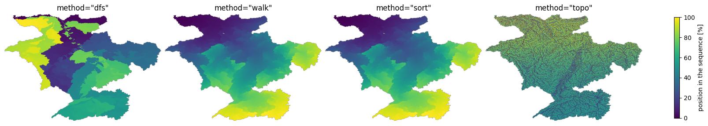

Tip
Cell orderings#
idxs_seq stores cells in outlet-to-headwater order: a cell appears after the cell it drains into. Methods that need headwater-to-outlet processing simply traverse the same sequence in reverse. upstream_area, basins, stream_order and similar methods all use this dependency order. order_cells builds it on first use, so most scripts never call order_cells directly.
Four methods build the sequence. They return the same cells and every one of them preserves the same dependencies. Cell counts agree exactly; floating-point accumulations can differ in their last rounding bits because independent tributaries may be added in another order. The methods differ in construction cost and in what the resulting sequence is useful for.
Here we assume that flow directions are known; see the earlier examples for background. Running in parallel is a separate subject, covered in Parallel accumulation.
[1]:
# import pyflwdir, some dependencies and convenience methods
import matplotlib.pyplot as plt
import numpy as np
import rasterio
import pyflwdir
# read and parse data
with rasterio.open("rhine_d8.tif", "r") as src:
flwdir = src.read(1)
crs = src.crs
flw = pyflwdir.from_array(
flwdir,
ftype="d8",
transform=src.transform,
latlon=crs.is_geographic,
cache=True,
)
# the array the orderings are built from: the next cell downstream of every cell
idxs_ds = flw.idxs_ds
print(f"{flw.ncells:,} cells draining to {flw.idxs_pit.size} pit(s)")
349,847 cells draining to 1 pit(s)
The four methods#
"walk" and "sort" group the cells the same way, so there are three groupings here, not four.
|
the order |
how it is built |
|---|---|---|
|
depth first: one tributary is finished before the next one starts |
from the pits upstream, with a stack over two flat arrays that list each cell’s upstream neighbours ( |
|
breadth first: the outlets, then the cells one step above them, then two steps, and so on |
from the pits upstream over the same index |
|
the same grouping as |
every cell is first given its number of steps to the outlet, then the cells are sorted on that number |
|
from the headwaters down, releasing a cell once all of its upstream cells are in; the result is turned around at the end |
a count of upstream cells per cell, |
n counts every cell of the raster, the ones outside the network included, and e the links between cells that drain into one another.
Two things vary down that table and it helps to keep them apart. One is the traversal, which decides the order that comes out. The other is how the upstream cells are held while the traversal runs, which decides what it costs and leaves the order untouched.
"walk" and "sort" were already in pyflwdir. The breadth-first traversal behind "walk" is unchanged; what PR #115 changed is the index it reads, from a dense table with room for the largest number of upstream cells in every row to compressed sparse row layout. "dfs" and "topo" were added in PR #119. The layout and the two orderings come from FlowTopo, cited at the end.
All four give every cell of the network exactly once, with every cell after the cell it drains into:
[2]:
methods = ["dfs", "walk", "sort", "topo"]
seqs, positions = {}, {}
for method in methods:
flw.order_cells(method=method)
seqs[method] = flw.idxs_seq
# where each cell sits in this sequence; -1 for the cells outside the network
pos = np.full(idxs_ds.size, -1, dtype=np.int64)
pos[seqs[method]] = np.arange(flw.ncells)
positions[method] = pos
cells = np.sort(seqs["dfs"])
print(f"{'method':>8} {'cells':>9} {'same cells':>10} {'downstream first':>16}")
for method, seq in seqs.items():
same = np.array_equal(np.sort(seq), cells)
upstream = seq[idxs_ds[seq] != seq] # every cell but the pits
first = np.all(positions[method][idxs_ds[upstream]] < positions[method][upstream])
print(f"{method:>8} {seq.size:>9,} {str(same):>10} {str(bool(first)):>16}")
method cells same cells downstream first
dfs 349,847 True True
walk 349,847 True True
sort 349,847 True True
topo 349,847 True True
Colour below is where a cell sits in its own sequence, dark early and light late.
[3]:
fig, axes = plt.subplots(
1, 4, figsize=(16, 3), sharex=True, sharey=True, constrained_layout=True
)
for ax, method in zip(axes, methods):
percent = positions[method].reshape(flw.shape) / flw.ncells * 100
im = ax.imshow(np.ma.masked_less(percent, 0), cmap="viridis", vmin=0, vmax=100)
ax.set_title(f'method="{method}"')
ax.axis("off")
fig.colorbar(im, ax=axes, shrink=0.8, label="position in the sequence [%]")
plt.show()

"dfs" finishes one tributary before starting the next, so each tributary is a block of one colour. "topo" first works from the headwaters down and then reverses that result to match the outlet-to-headwater convention, so the headwaters end up late in the stored sequence. "walk" and "sort" produce the same grouping.
"walk" and "sort": one grouping by two routes#
Both lay down rings of cells equally far from the outlet; only the route differs. "sort" gives every cell its number of steps to the outlet first, by walking each flow path down until it meets a cell that already has one, and then sorts all cells on that number. "walk" never computes it: starting at the pits and taking the cells immediately upstream of the ones just added produces the rings in order, and the sequence is the only array it writes. That is why "sort" is the slower of
the two on large arrays, and why it is kept only for compatibility.
Within a ring neither order has a hydrological meaning. numpy.argsort does not keep equal values in place and the walk follows whichever cell it reached first, so the two disagree there for almost every cell:
[4]:
rings = flw.rank.ravel() # number of steps to the outlet, per cell
print("same rings:", np.array_equal(rings[seqs["walk"]], rings[seqs["sort"]]))
print(
f"cells in a different place inside them: "
f"{np.count_nonzero(seqs['walk'] != seqs['sort']):,} of {flw.ncells:,}"
)
same rings: True
cells in a different place inside them: 348,115 of 349,847
Depth first, the default: a watershed is a slice#
Under "dfs" the cells draining to any one cell are an unbroken stretch of the sequence, and the stretch starts at that cell. Its length is the number of cells draining to it, which upstream_area(unit="cell") gives. So the watershed of any cell is
seq[position : position + cells_upstream]
with no traversal at all. The table below checks the six largest Rhine subbasins. True means that the slice contains exactly the cells draining to that outlet; False means that unrelated cells occur inside the same slice.
[5]:
# the subbasin outlets, and the cells draining to each of them. min_sto is chosen for
# this raster: it keeps the confluences of the sixth order streams and above
_, idxs_out = flw.subbasins_streamorder(min_sto=6)
uparea = flw.upstream_area("km2")
idxs_out = idxs_out[np.argsort(uparea.flat[idxs_out])[::-1]][:6]
cells_up = flw.upstream_area(unit="cell").ravel() # cells draining to each cell
print(f"{'km2':>9} {'cells':>8}" + "".join(f"{m:>9}" for m in methods))
for idx in idxs_out:
basin = np.flatnonzero(flw.basins(idxs=np.atleast_1d(idx)).ravel() > 0)
row = f"{uparea.flat[idx]:>9,.0f} {basin.size:>8,}"
for method in methods:
start = positions[method][idx]
cut = seqs[method][start : start + cells_up[idx]]
row += f"{str(np.array_equal(np.sort(cut), basin)):>9}"
print(row)
km2 cells dfs walk sort topo
195,451 349,847 True True True True
70,885 123,265 True False False False
32,725 59,739 True False False False
28,075 50,077 True False False False
27,121 49,051 True False False False
17,585 29,983 True False False False
This is the nested set labelling of a tree, where a subtree is an interval and asking whether one cell lies upstream of another is a comparison of two numbers rather than a walk (Tatarinov et al., 2002). Haag and Shokoufandeh (2019) use it for watershed delineation on stream networks, in the continuous form used here, where the position in the depth-first sequence is the only number that has to be stored: the end of the interval follows from the number of upstream cells, which a flow accumulation grid already carries.
The slices that start at a pit are whole basins, and no cell of one drains into another:
[6]:
seq = seqs["dfs"]
starts = np.flatnonzero(idxs_ds[seq] == seq) # a pit opens each basin
ends = np.append(starts[1:], seq.size)
print(f"{starts.size} basin(s) in {seq.size:,} cells")
for a, b in zip(starts, ends):
row, col = np.unravel_index(seq[a], flw.shape)
print(f" seq[{a}:{b}], {b - a:,} cells, outlet at row {row}, col {col}")
1 basin(s) in 349,847 cells
seq[0:349847], 349,847 cells, outlet at row 21, col 57
The Rhine is one basin, so there is one basin slice here. On a raster with many basins, the same operation produces independent slices that share no cell.
The next number measures sequence locality: how often the next cell in the sequence drains into the current cell. A high percentage means consecutive memory accesses tend to stay on the same tributary.
[7]:
for method in methods:
s = seqs[method]
print(f" {method:>8} {100 * np.mean(idxs_ds[s[1:]] == s[:-1]):>5.1f}%")
dfs 60.0%
walk 0.0%
sort 0.0%
topo 0.2%
What changes with the method#
The default used to be "walk". The upstream cells contributing to each cell do not change. "dfs" and "walk" add the upstream cells of a confluence in the same order, by index, so their floating point sums are identical bit for bit. "sort" and "topo" add them in another order, so their sums can differ; over the cell areas here the difference stays at the level of the rounding:
[8]:
# a second object without the cache: the Strahler stream order is kept once it has been
# computed, and the one of the first method would otherwise be handed back for all four
flw2 = pyflwdir.from_array(
flwdir, ftype="d8", transform=src.transform, latlon=crs.is_geographic, cache=False
)
uparea, strord = {}, {}
for method in methods:
flw2.order_cells(method=method)
uparea[method] = flw2.upstream_area("km2")
strord[method] = flw2.stream_order()
valid = uparea["dfs"] != -9999
print(f"{'method':>8} {'largest difference in km2':>25} {'stream_order equal':>18}")
for method in methods:
diff = np.abs(uparea[method][valid] - uparea["dfs"][valid]).max()
equal = np.array_equal(strord[method], strord["dfs"])
print(f"{method:>8} {diff:>25.1e} {str(equal):>18}")
method largest difference in km2 stream_order equal
dfs 0.0e+00 True
walk 0.0e+00 True
sort 4.7e-10 True
topo 5.5e-10 True
What does change is anything numbered or written out in sequence order. subbasins and subbasins_streamorder hand out ids as they go through the sequence: the same areas under every method, with different ids. The features of streams and the cells of inflow_idxs and outflow_idxs come out in a different order.
Which cells inflow_idxs returns depends on which upstream cell of a confluence comes first in the sequence: "dfs" and "walk" both put the one with the lowest index first and return the same cells, while "sort" and "topo" can put another one first and return other cells. ucat_area and ucat_volume add the cells of a unit catchment into one sum in sequence order, so the last bits of that sum can change under every method.
Four other functions do not use the sequence set with order_cells. Each builds its own, grouped by rank (steps to the outlet): dem_adjust, which adjusts the elevation one flow path at a time starting from the longest, dem_dig_d4, which lowers a cell beside a diagonal step, subbasins_area, where a tributary writes the area left to the main stem cell beside it, and subbasins_pfafstetter, which picks between tributaries of equal area in the order the cells come in.
The table compares the other three orderings with "dfs":
[9]:
def same_areas(a, b):
"""Do two id rasters divide the cells up in the same way?"""
a, b = a.ravel(), b.ravel()
if not np.array_equal(a > 0, b > 0):
return False
a, b = a[a > 0], b[b > 0]
pairs = np.unique(np.stack([a, b]), axis=1) # the (id here, id there) pairs
return pairs.shape[1] == np.unique(a).size == np.unique(b).size
def compare(a, b):
"""What the results under one ordering (a) share with those under another (b)."""
return {
"subbasins_streamorder, same areas": same_areas(a["strord"], b["strord"]),
"subbasins_streamorder, same ids": np.array_equal(a["strord"], b["strord"]),
"subbasins, same areas": same_areas(a["subbas"], b["subbas"]),
"subbasins, same ids": np.array_equal(a["subbas"], b["subbas"]),
"streams, same features": sorted(a["streams"]) == sorted(b["streams"]),
"streams, same order": a["streams"] == b["streams"],
"outflow_idxs, same cells": np.array_equal(
np.sort(a["outflow"]), np.sort(b["outflow"])
),
"outflow_idxs, same order": np.array_equal(a["outflow"], b["outflow"]),
}
stream_mask = uparea["dfs"] > 1000 # km2, a threshold chosen for this raster
region = np.zeros(flw2.shape, dtype=bool)
region[200:450, 300:650] = True # a window chosen for this raster
results = {}
for method in methods:
flw2.order_cells(method=method)
results[method] = {
"strord": flw2.subbasins_streamorder(min_sto=6)[0],
"subbas": flw2.subbasins(stream_mask)[0],
"streams": [
tuple(feature["properties"].values())
for feature in flw2.streams(mask=stream_mask)
],
"outflow": flw2.outflow_idxs(region),
}
others = {method: compare(results[method], results["dfs"]) for method in methods[1:]}
print(f"{'compared with dfs':<34}" + "".join(f"{method:>7}" for method in others))
for line in others["walk"]:
print(f"{line:<34}" + "".join(f"{str(others[m][line]):>7}" for m in others))
compared with dfs walk sort topo
subbasins_streamorder, same areas True True True
subbasins_streamorder, same ids False False False
subbasins, same areas True True True
subbasins, same ids False False False
streams, same features True True True
streams, same order False False False
outflow_idxs, same cells True True True
outflow_idxs, same order False False False
Which to use#
"dfs", the default, for the serial path and for work taken basin by basin or subbasin by subbasin: every basin is one interval, and on this Rhine raster most cells immediately follow their downstream cell. "walk" when cells must be grouped by distance to the outlet. "topo" when avoiding the upstream index matters. "sort" remains for compatibility.
The ordering does not decide whether anything runs in parallel: see Parallel accumulation.
References#
The breadth-first traversal behind "walk" is pyflwdir’s own; "dfs" and "topo" are standard graph traversals, cited in core.idxs_seq_dfs and core.idxs_seq_topo. The compressed sparse row index contributed in PR #115, the two implementations contributed in PR #119, and the comparison above come from FlowTopo:
Jiang, L., Wu, H., Chen, W., Huang, Z., Yamazaki, D., Yang, T. and Li, L. (2026). FlowTopo (v1.0.0). Zenodo. https://doi.org/10.5281/zenodo.22227621
Braun, J. and Willett, S.D. (2013). A very efficient O(n), implicit and parallel, method to solve the stream power equation governing fluvial incision and landscape evolution. Geomorphology 180-181, 170-179.
Kahn, A.B. (1962). Topological sorting of large networks. Communications of the ACM 5(11), 558-562.
Tatarinov, I., Viglas, S.D., Beyer, K., Shanmugasundaram, J., Shekita, E. and Zhang, C. (2002). Storing and querying ordered XML using a relational database system. Proceedings of the 2002 ACM SIGMOD International Conference on Management of Data, 204-215. https://doi.org/10.1145/564691.564715
Haag, S. and Shokoufandeh, A. (2019). Development of a data model to facilitate rapid watershed delineation. Environmental Modelling & Software 122, 103973. https://doi.org/10.1016/j.envsoft.2017.06.009